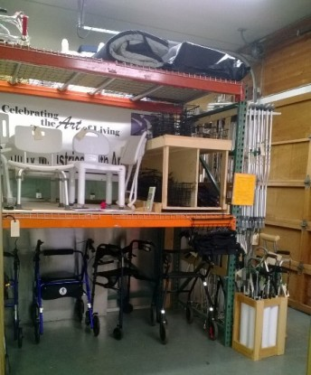

Equipment Donations
If you can donate re-usable medical equipment or supplies,we need your donations and you can bring them in anytime during our open hours.
Hospital Beds, Power Wheel Chairs, Scooters, & Power Lift Chairs accepted at BELLEVUE location ONLY.
Open Hours: 11 am - 5 pm, Tuesday - Thursday
CLOSED on MONDAYS, FRIDAYS, WEEKENDS & HOLIDAYS

The Mobility Center is located in the LOWER level of the North Park business center at:
12328 Northup Way, Bellevue, WA Directions
To make other arrangements for pick up, Contact us by Phone: 425-885-1008 or email
Two Additional Locations To Donate Equipment:
We have a partnership with InterConnection, a computer recycling non-profit in SEATTLE. The partnership allows:
- Bridge Mobility equipment (manual wheelchairs or smaller items, ONLY) may be dropped off at InterConnection's Seattle Main Facility in Fremont: 3415 Stone Way North, Seattle, 98103; Please bring items around side of building (at 1111 N 35th St.) Hours: M-F 10-6, Sat. 10-5
Contact 206-633-1517
- Computer donations may be dropped off at the Bridge Meyer Mobility Center, Bellevue. (Items InterConnection accepts)
New (2015)! We have a partnership with Mount Si Senior Center
411 Main Ave S, North Bend, WA 98045
Hours: M-F, 9:00AM – 4:00PM
425-888-3434
Please note the Senior Center does not distribute equipment.